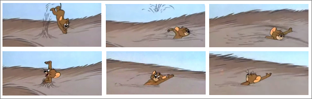

GERMANY FOR EXPERTSby Toby Harris |
|---|
|
This was the hardest article to start, so here’s a good place to begin. . . Pascal Montagna: “Tobby, you are Germany and I am Russia. So let’s do somesing togezzer.” [A typical highly charismatic and diplomatic opening line from the WDC 2004 Champion.] “Tobby”: “ Great to play ‘wiz’ you again, Pascal. Ok, let’s start with Sweden. It’s yours. I never deny Russia Sweden anyway. But as an act of good faith, please can you take it via Finland?” Pascal: “Of course, I will do zat. It is great to have an agreement. See you in Sweden.” The Fall 1901 position ended like this, using the “Olde Faithful” Dip board of course. . . Call it a bounce, call it a stab. If you were Swedish it would be “STAAAAAAAAAAB!”. A stab without even a single dot gain in my favour. So why do it? I don’t know really; it just seemed like a fun thing to do at the time. But it boiled down to a single strategic principal, rather than any diplomatic one. i.e., if I bounce in Sweden (and the Russian fleet is left back in Finland) then … what can he do about it?
The World Diplomacy Database is a masterpiece of information. The entire hobby is grateful for it. But it doesn’t have every game. I have many absent games of varying results, including two 18’s. It is, at least, indiscriminate about its absences. The point being that I cannot find this game with Pascal. Never mind – it is in my head where the story can be favourably manipulated in this article to good effect, under the banner of artistic license.
Pascal Montagna Pascal is an amazing Diplomat. His highly interesting and charismatic words win everybody’s attention; especially any female players on the table. He is just fun to be around. I had no intention to humiliate him with this bounce over Swe, but he is not a great strategist. Mix Pascal’s Diplomacy with Vincent’s strategy and you have the World’s Greatest Player!
If you can persuade Russia to take Sweden by moving their fleet via Finland then definitely bounce Swe! Not only is it amusing, but it
boxes Russia into a corner in 1901. And if ever you achieve it, then make like Jerry (of Tom & Jerry cartoons) doing the backstroke in the dog’s fur!
Know Your Enemy! As Germany, this is more important than ever. As the most centrally located of all Great Powers, Germany should definitely be talking to everyone else every turn. In 1999, the London Trophy made a comeback with a six-board one-round tournament. A brilliant turnout from the French Olde Guarde (most joining us in a Kingston nightclub late on the Friday night) with the game on Saturday. As Russia, Cyrille’s Germany agreed to let me have Sweden if I opened north (Mos-Stp). So I did just that. Safe in the knowledge I was getting Sweden . . . I convoyed A(Stp) – Swe. It was after this move that Cyrille learned who the “odd-ball” playing England truly was. John Wilman; editor of the postal Dip Zine I subbed to since my earliest days in the hobby. As Germany you must do your homework: find out who knows who in Spring 1901. The winner of this game, incidentally, was France; Geoff Bache (who finished 2nd in the tournament, behind Simon Bouton). Geoff was amazing. But that’s another story. The point to this paragraph being that you should never allow Russia into Sweden if you think he might convoy there. Ideally, that F(StP sc) should be headed towards Norway in 1902, not towards the Baltic Sea! All that said, and if there are no foreseeable shenanigans, in general, I would let Russia have Sweden. After all, you can always go take it for yourself in 1902! But what about the alternative opening: F(Kie) – Hol? Personally, I don’t like it. You are left with immediate egg on your face if Russia opens to Silesia, and with no power to punish this treachery. And it’s not a great option for the Sealion opening either. Unless you have a major plan in mind, F(Kie) – Den is best. So now let’s focus on the value of keeping Munich in 1901. . . Losing Munich in 1901 might increase your chances of topping the table And that’s because: (a) The game is relatively self-balancing, so players who take a home centre from someone else in 1901 often find themselves under immediate pressure for 1902; and
(b) Until the late game (when stalemate lines begin to form) Munich is an incredibly fluid centre; often serving purely as a stepping stone for passing
travellers.
The Fall of Munich I have seen Germany lose Munich and go on to top the table many times. Take Francois Sommaire; a great example on this point. With a Dip career spanning 1993 to 2001, though hopefully this will not be his last appearance, Francois played in 63 games (according to the World Diplomacy Database) at 31 tournaments. He played abroad regularly too (Belgium, UK, Sweden) making him a well-known player internationally during this period. And from those 63 games he was eliminated 9 times, which is an interesting exact 1:7 statistic. He topped his boards 12 times, which is a good 1:5 statistic. But from all 63 games, his best three s.c. counts were 12, 12 and 13. So, no major s.c. blockbusters. Then I checked how many top-three tournament places he had achieved. Just one: No 2nd or 3rd places, but he won this event. This was an unusual 59-player event for Francois. After conceding a dix-huit (18) to me in round 1, he went on to top his round 2 and 3 boards. So we met again in the final, with Yann, Vincent Carry and other celebrities of the day. This was a particularly memorable final because for some strange reason everyone wanted a piece of Francois right from the start. Italy opened to Tyr, Russia to Sil and France to Bur. But despite this onslaught, nobody wanted Francois crushed at the cost of another Great Power expanding massively either. So eventually he was given some space, his aggressors went elsewhere and Francois was left to grow steadily, and go on to win . . . And that is the point; in a top table scenario, Germany can not only survive a 1901 attack (including the loss of Munich) but can actually thrive from it. I am not entirely sure of the philosophy or reasoning behind this, but guess that 1901 is too early for many vultures to extend themselves too far. For example, if Russia takes Mun or Ber in 1901, perhaps Turkey & Austria pile into Russia from the South in 1902 to balance the game? Then Russia pulls back and Germany recovers? Germany has that self-balancing position like no other, and the loss of Munich in 1901 should not be regarded as the end of the World. But if Russia does open to Silesia then I believe it is more important to guard Berlin than Munich.
Munich can be re-captured, but once Berlin has gone it is often the start of a full demise.
1901 Let’s start the game. There is only one reason you wouldn’t move F(Den)-Kie; you have decided to work with England in an unusual way. You are going for France and relying on England’s free ride to Denmark encouraging them onwards to Swe & Stp. But what then? I have seen England annexe Russia (as far as Sev) with armies, but this is very rare. Far better for England to sail her ships where they count; towards the Med. At least, this is the ideal from Germany’s perspective. So Kie-Hol is not a good move. Out of the 39 years I have played Diplomacy, and the umpteen times playing Germany, I have ordered Kie-Den 100% of the time. It is quite simply the best move. Like Con-Bul. Berlin has some choice, like Silesia. But 90% of the time Berlin to Kiel is the best move. Some have considered Munich as a viable alternative, but why? There are no neutral supply centres adjacent to Munich, and it can be defended from stray units in Tyr or Bur from Kiel anyway. So in reality, Ber - Kie is the only sensible choice unless Russia insists on a bounce. And that just leaves Munich. Munich does have choices. All are viable. · Mun-Tyr is a great choice in support for your back-to-back ally Austria. It is also a great choice of opening when considering a three-way northern alliance, in conjunction with Mar-Pie. · Mun-Bur is a viable agreed bounce with France. But always insist that he bounce you from Marseilles. That gives: o France the ability to bounce England from Belgium (Par – Pic) o France the ability to take Spain from the bounced Marseilles o You the chance to have a quiet word with Italy . . . “move to Piedmont and you will either take Mar or France won’t get a second build!” · Mun – Ruh; Always the favourite. This classical opening gives Germany the luxury of supporting Kie-Hol in the fall and freeing up Kiel for the second fleet. England bouncing you in Holland is disastrous, so Mun-Ruh is a very solid opening. These openings provide very little by way of realistic choice. Whilst there is no need to be greedy about visiting the Rhum Bars of Belgium, you do want to be assuring yourself a solid 1901 because a poor start can attract greedy vultures in 1902. With all this in mind, I actually find Germany to be the most “boring” country in Spring 1901. The choices are very limited. In the fall however, there are a few choices. Sweden has already been touched upon, but the Sealion could do with a mention. . . The Sealion The opening requires France to open to ENG. . . And then to support Germany to NTH. Yes, it has merit. But in reality, a sensible England will support NTH from NWG and convoy to Nwy. Or they will bounce Holland from NTH. It’s a bit like the Key Lepanto (requiring Turkey not to bounce Serbia); experts will spot the flaw, pretend they haven’t seen the plan and then spring the trap more dangerous than when you started the assault. At worst, England has a guaranteed build if they open correctly (as most do), and that means a F(Lvp) for England or something less savoury in Germany’s face. I would give the Sealion 7:10 (a 70% chance) . . . it’s good, really good, but not flawless. There are better long-term strategies to take out England. And that is where this article focuses next; the mid to long-term game. 1902 - 1905 With Germany being so central and fluid, it is impossible to map all the possible permutations. There is no direct set of perfect moves (or even a “shape”) to follow. Truth is, Germany can follow any shape. But there are some basic principles to aim for, and this should help. So let’s move on to those basic principles and some tips for the mid-game. . . 1. Build a second fleet Without a second fleet, Germany is naked. And no England should deny you the right to at least put a few clothes on! At the WDC final this year, and under pressure, Cyrille’s Germany started with armies only (Hurrah!). Being the master he is, Cyrille found a way to construct his second fleet by 1904 though. Hurrooo! He had to do something . . . no matter how hard my England tried to keep him without trousers. You must never stay as a single fleet Germany, or you will eventually become powerless to England. Cyrille made his effort, as did I in Paris. Market forces are strong! 2. Armies Into The Barren Zone We all know the “barren zone” now don’t we? Allow Olde Faithful to demonstrate:
Please don’t get cheeky and add Gal or Pie; better stuff is coming on them later anyway. Ok, golden rule – never send your second army into the Barren Zone until: (a) England is dead and France has gone south, or
(b)
In other words; don’t push all your armies south, leaving your northern flank wide open! Sending a singular scouting party south is just fine. Go smell out the goodies. But don’t be the goon that does all the work, only to be stabbed from behind. 3. Time To Stab? Having built that second fleet, always remember that they work together. Don’t send one fleet against England without the other – you need both to work together. An example is F(BAL) – Swe, F(Swe) – SKA, or some other naughty combo. Likewise, don’t stab France with Mun-Bur alone, you need to move Kie-Ruh / Hol-Bel as well. The gist is this: don’t just stick the knife in . . . give it a twist as well! And on this subject, all the more reason NOT to take Belgium in 1901. I will come onto that next. Belgium is not a good place to be in 1901; it is a good place to be in 1904 / 5. When the three-way splits up, dive in with both feet and Belgium is a stepping stone. Why You Should NOT Take Belgium In 1901 Because you can “save it for later”. When you have an alliance it needs to be equal shares. So it is better that your ally has Belgium . . . you will get “something else” by way of compromise. And Belgium (your ally’s centre) will always be easy to steal later on. By not taking Belgium in 1901, you transform it into a two-centre stab in 1904 / 1905 My German Stats According to the World Diplomacy Database, I have played Germany in face-to-face Dip 18 times, dating back to 1986. And on 9 of those occasions, topped the board. As said before, these stats don’t include every game, but we all love ‘em and they do paint a picture.
German Convoys The most popular German convoys are to Yorkshire and Livonia. The former is the primary reason so many England’s keep an army at home at all costs, and the Kiel - Livonia convoy is an excellent 1902 / 1903 option if at all possible. But neither of these (despite being really powerful moves) will be likely to eliminate your victim without help from elsewhere. For that reason, as soon as the moves are read out and your convoy successful, you should be enlisting assistance from others around the table. There are many ways of asking for this assistance, but one method I have historically found to be quite successful is to make light of the situation and have the others feel that to join in with you would be more “fun” than the alternative of propping up your victim. No strategic argument therefore required. Just say:
 The End Game – Grabbing 18 Never forget that there are a whopping 23 supply centres on the board which Germany can theoretically take by the end of Spring 1902. Ok not all at once of course, but this gives an indication of how close Germany is to taking an 18 at any given moment. The hardest part to get right is the timing of entering and passing the Barren Zone with more than one unit. So a stray army wandering towards Gal / Ukr (if possible) sometime around 1903 – 1904 is a good starting point. And as previously mentioned, once NTH is vacated (either because France has taken out England, or England has stuck well into France) this is a good time to start piling more armies through the Barren Zone, into Austria and Russia. To get the 18 however, a push towards both the English and French centres is required also. Effectively lashing out in every direction, guaranteeing yourself 2+ builds per year and reinforcing the front line where more units are most desperately needed. The Army / Fleet Mix There is probably no right or wrong in this respect, but my preferred unit mix would be a second fleet in 1901 and a third somewhere between the 7 th and 10th unit. A fourth fleet is definitely not essential to get 18 centres; if the right moves are played out, convoys to Yor & Lvn will remove any need to be too fleet heavy. Entering the Mediterranean is not essential for Germany to take 18, but securing MAO probably is. You will need support into those final centres such as Spain & Portugal, and a blockade at MAO (supported by your other two fleets from above) is normally sufficient to seal up the Western side of the stalemate line. As most stalemate lines run through Switzerland, you can effectively consider most lines as “two” stalemate lines. i.e., East and West of Switzerland. So if you do take the centres as far as the Mar / Spa / Por line in the west, you won’t even need to break into Austria, nor as far as Moscow. But when your position looks unlikely to take those key Iberian centres, the only alternative to an 18 lies in Austria. For this reason, when you head against Austria it needs to be with full force. Mun-Tyr alone probably won’t do it. So I would suggest it would be best to start on the Russian, ideally sealing up War & Mos. This allows the armies to drop down against Austria very quickly if no line can be held from the South. The Key Province Unlike every other country, Germany has no key defensive / offensive province. Like Albania for Austria. Germany is way too fluid to need one, and correctly placed new units can spring into action at lightning speed. So there is no need to worry too much about a defensive key province. That said, A(Ruh) s A(Hol) is a good place to be when setting up a non-aggression defensive line with France. Ruh can be your soft underbelly, whilst also well poised for a strike on Belgium or Burgundy when the timing is right. .
If you wish to e-mail feedback on this article to the author, and clicking on the envelope above does not work for you, feel free to use the "Dear DP..." mail interface. |